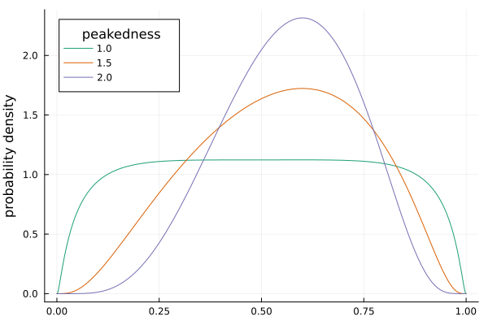

LogitNormal distribution
Aggregate statistics
The logitnormal distribution has no analytical formula for mean, variance nor its mode. This package estimates those by numerically integrating the distribution.
d = fit(LogitNormal, 0.8, @qp_u(0.9), Val(:mode))
mean(d), var(d)
mode(d) ≈ 0.8Specifying a logitnormal distribution by mode and peakedness
It is sometimes difficult to specify a precise upper quantile, because the logitnormal distribution is already constrained in (0,1). However, user might have an idea of the spread, or the inverse: peakedness, of the distribution.
With increasing spread, the logitnormal distribution becomes bimodal. The following function estimates the most spread, i.e most flat distribution that has a single mode at the given location.
DistributionFits.fit_mode_flat — Functionfit_mode_flat(::Type{LogitNormal}, mode::T; peakedness = 1.0)Find the maximum-spread logitnormal distribution that has a single mode at given location.
More peaked distributions with given single mode can be obtained by increasing argument peakedness. They will have a spread by originally inferred σ² devidied by peakedness.
Examples
m = 0.6
d = fit_mode_flat(LogitNormal, m; peakedness = 1.5)
mode(d) ≈ mThe found maximum spread parameter, σ, is divided by the peakedness argument to specify distributions given the mode that are more peaked.
A shifted and scaled version of this distribution can be used as a moother alternative to the Bounded uniform distribution.
DistributionFits.shifloNormal — FunctionshifloNormal(lower,upper)Get a Shifted Flat LogitNormal distribution that is most spread with an extent between lower and upper. This is a more smooth alternative to the bounded uniform distribution.